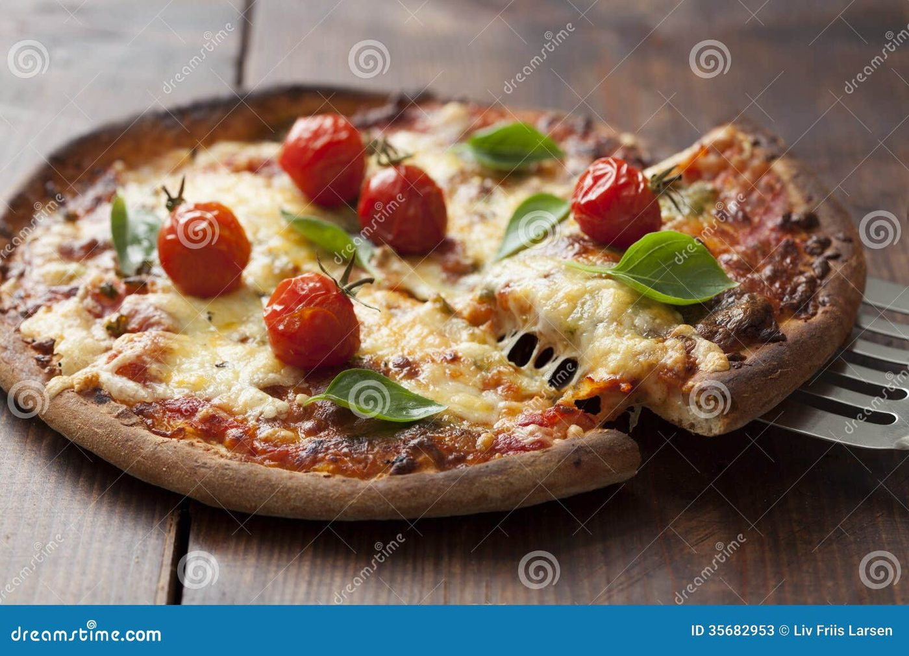
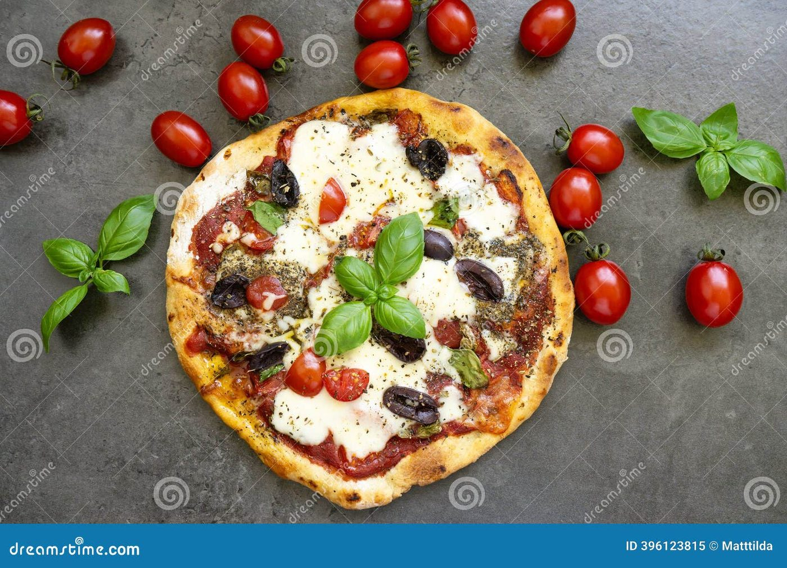
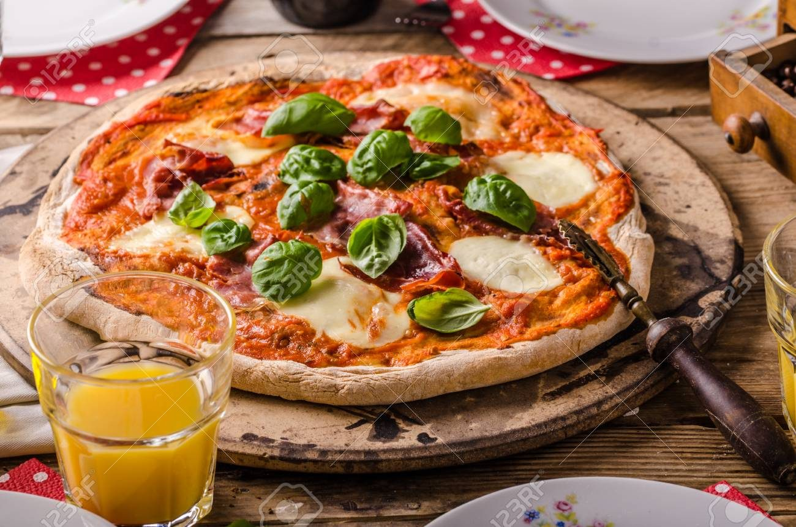
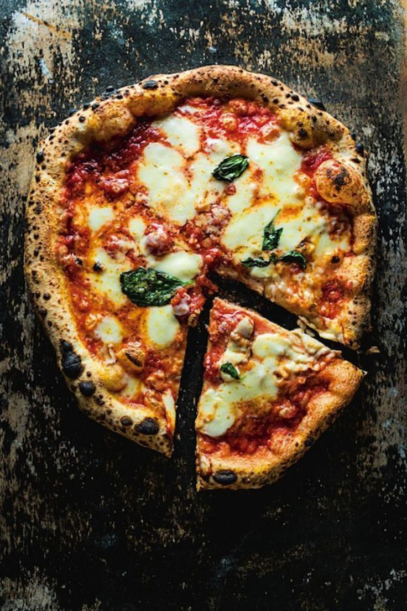
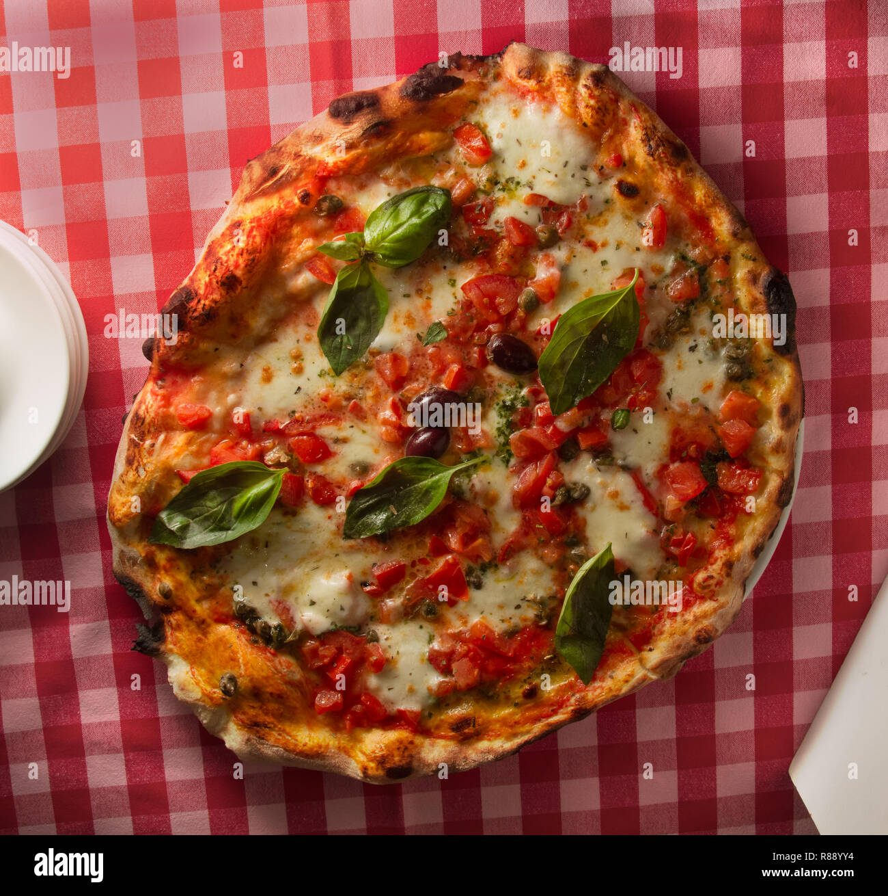
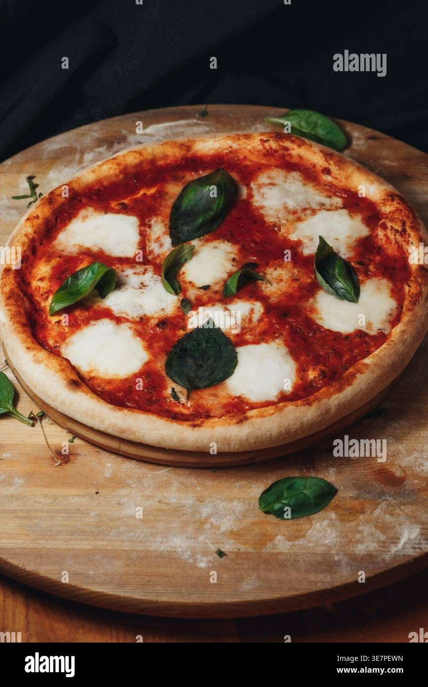
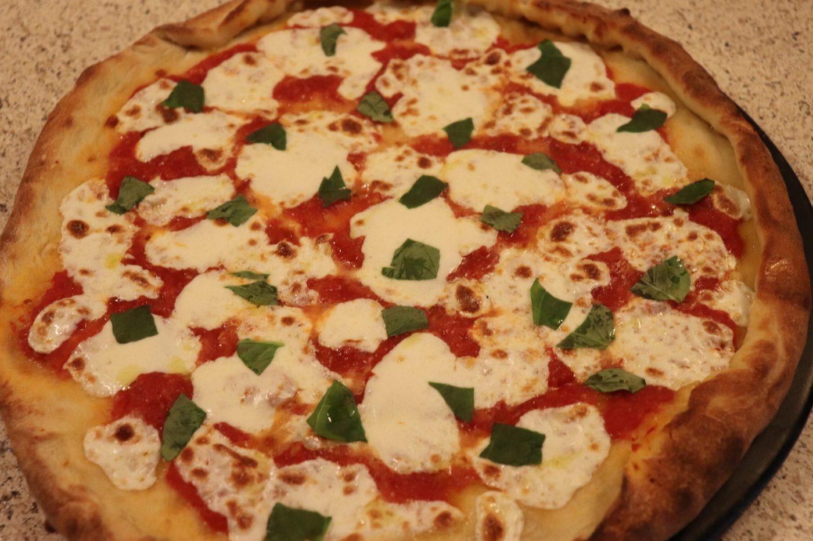

← Italian Classics
Classic Margherita Pizza
Three ingredients, one blistered crust, zero shortcuts that matter.
Three ingredients, one blistered crust, zero shortcuts that matter.
The Margherita is the pizza every other pizza is measured against, and its genius is how little there is to hide behind. Tomato, mozzarella, basil, olive oil — a dough that has been allowed to ferment properly does all the talking. The legend says Raffaele Esposito made it for Queen Margherita in 1889, arranging the tomatoes, mozzarella and basil to mimic the Italian flag. The legend is probably a legend. The pizza is unquestionably real.
What separates a great home Margherita from a disappointing one is not a wood-fired oven; it is patience with the dough and restraint with toppings. A long, cold rise in the fridge builds flavor and blistered, leopard-spotted char when it hits screaming heat. And the single most common home-pizza mistake is overloading it. Two ounces of sauce. Not three. The dough needs to breathe.
serves 2 x 12-inch pizzas — tick items off as you shop; it saves as you go
Dissolve the yeast in the water. Add flour and mix to a shaggy mass, then rest 20 minutes — this autolyse makes the dough dramatically easier to handle. Add the salt, knead 5 minutes until smooth. It will still look slack; that is correct.
Cover and refrigerate 24 hours (minimum 4). The slow rise is where the crust gets its flavor — skip it and no oven trick will compensate.
Divide into two 400 g balls. Let them sit, covered, at room temperature 2 hours before shaping. Cold dough tears; relaxed dough stretches.
Set a pizza steel or overturned cast-iron skillet on the top rack and preheat at your oven's maximum (275°C / 525°F+) for a full hour. This is the single biggest upgrade available to a home oven.
Crush the tomatoes by hand with a pinch of salt. No cooking, no garlic, no oregano — the sauce cooks on the pizza in 90 seconds.
Press the ball flat from the center, leave a 2 cm rim, then stretch over your knuckles, letting gravity work. A rolling pin crushes the gas bubbles you spent a day building.
Sauce thinly, scatter mozzarella, drizzle oil. Slide onto the screaming steel. Bake 6-8 minutes until the rim is blistered and spotted with char.
Tear basil over the top the moment it leaves the oven — added earlier it blackens. Wait 60 seconds before slicing so the cheese sets. That first cut is the whole point.







Images are web-sourced via image search and self-hosted. Original sources:
https://z-cdn.chatglm.cn/image-search-mcp/images-ppt/28654be7a84c.jpghttps://z-cdn.chatglm.cn/image-search-mcp/images-ppt/621a65e7907f.jpghttps://z-cdn.chatglm.cn/image-search-mcp/images-ppt/98a8cbaf459a.jpghttps://z-cdn.chatglm.cn/image-search-mcp/images-ppt/b6533cda2517.jpghttps://z-cdn.chatglm.cn/image-search-mcp/images-ppt/baa2e2242bd2.jpghttps://z-cdn.chatglm.cn/image-search-mcp/images-ppt/bae679b31d9a.jpghttps://z-cdn.chatglm.cn/image-search-mcp/images-ppt/ed3897fc1f53.jpgVerified working videos — click a card to load the embed.


Powered by GitHub Issues — the backup kitchen. One issue per recipe; your comment lands in the repo.